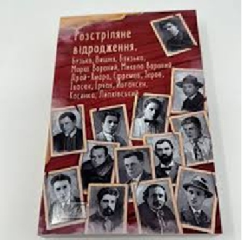
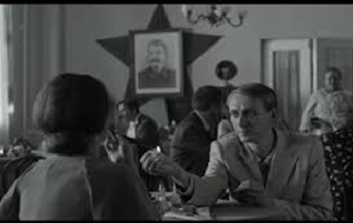
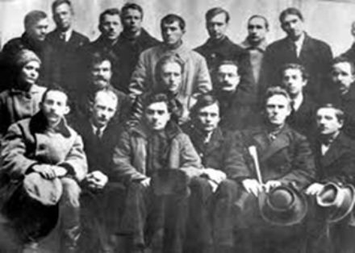

- Розстріляне відродження –
Літературно-мистецький рух 20-30х рр.,
для якого характерне духовне піднесення, представників якого знищили.
Мистецтво у цей час сягнуло небувалого розквіту.



До літературно-мистецького руху “Розстріляне Відродження” належали:
Микола Хвильовий, Микола Куліш, Григорій Косинка, Микола Зеров, Лесь Курбас, Валер’ян Підмогильний,
Юрій Яновський, Олександр Довженко, Євген Плужник, Михайль Семенко, Максим Рильський, Павло Тичина, Остап Вишня.
Більшість представників розстряного відродження були переконані в особливості своєї місії:
виховати на нових морально-етичних засадах людину майбутнього, піднести національне мистецтво на вищий художній рівень.